2 Statistische Signifikanz, p-Wert und Power
2.1 Mit welcher Stichprobenverteilung arbeite ich denn jetzt?
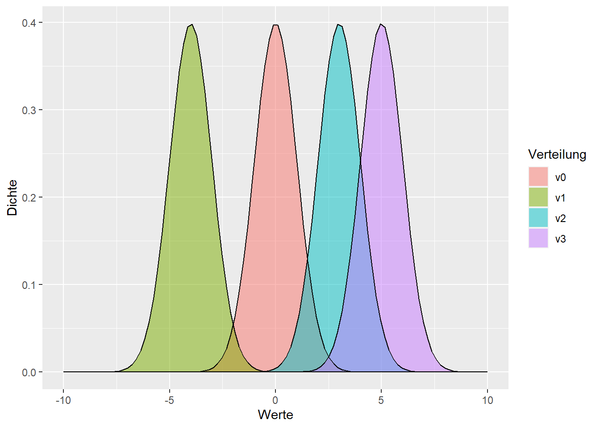
2.2 Mit der Verteilung die annimmt das nichts passiert!
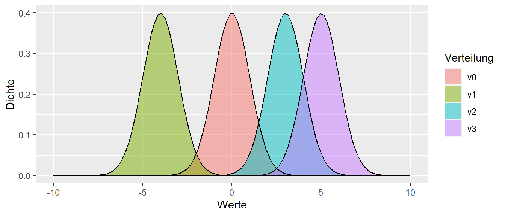
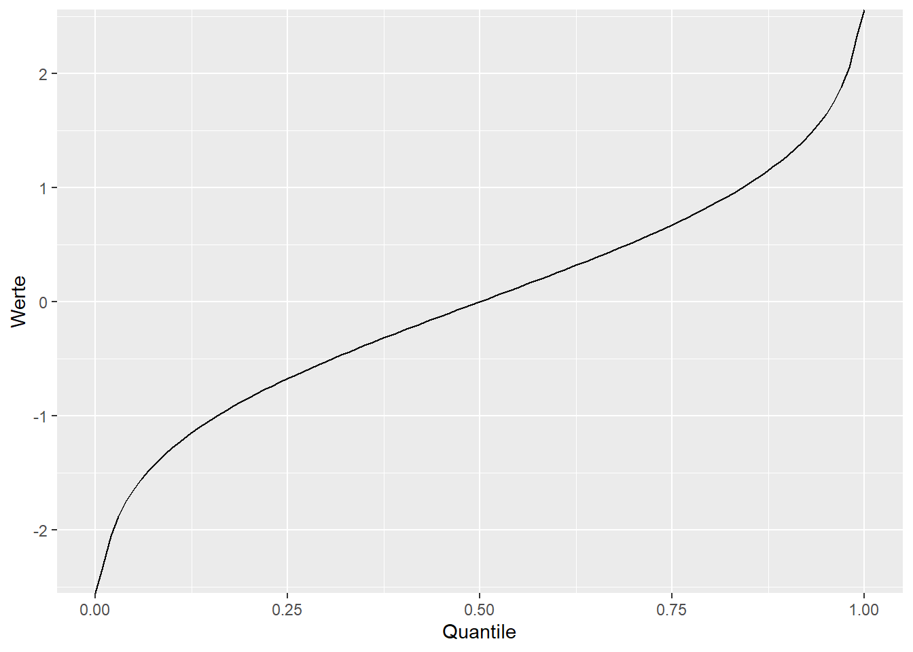
2.3 Signifikanter Wert
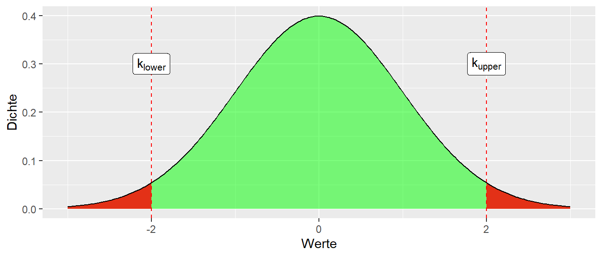
Wenn der Stichprobenwert der Statistik in der kritischen Region auftritt, dann wird von einem statistisch signifikanten Effekt gesprochen. Unter der \(H_0\) bin ich überrascht diesen Wert zu sehen!
2.4 Der p-Wert
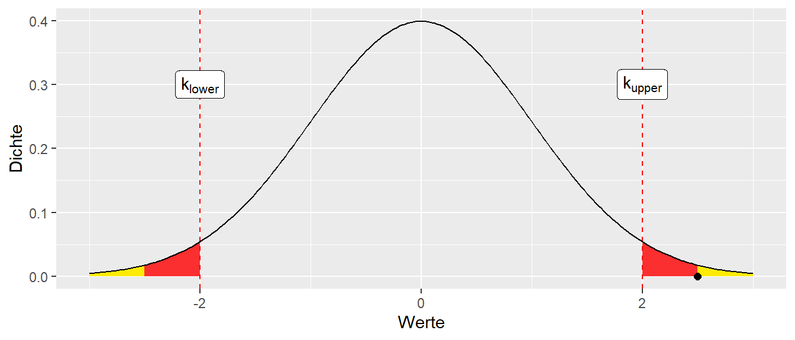
2.5 p-Werte
Der p-Wert gibt die Wahrscheinlichkeit für den gefundenen oder einen noch extremeren Wert unter der \(H_0\) an.
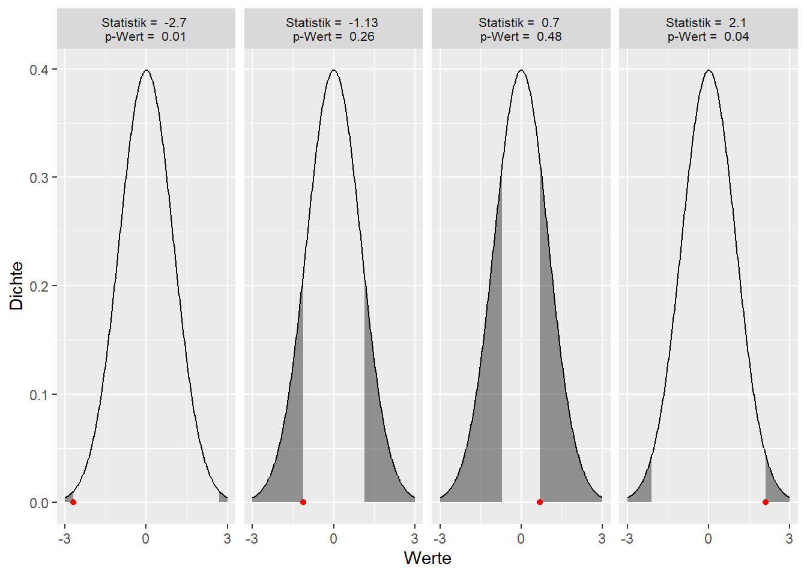
2.6 p-Werte
“[A] p-value is the probability under a specified statistical model that a statistical summary of the data (e.g., the sample mean difference between two compared groups) would be equal to or more extreme than its observed value.” (Wasserstein und Lazar 2016, p.131)
“[T]he P value is the probability of seeing data that are as weird or more weird than those that were actually observed.” (Christensen 2018, p.38)
2.7 Signifikanter Wert - Das Kleingedruckte
- Vor dem Experiment wird für ein \(H_0\) ein \(\alpha\)-Level angesetzt (per Konvention \(\alpha=0,05 = 5\%\))
- Anhand des \(\alpha\)-Levels können kritische Werte (\(k_{lower}, k_{upper}\)) bestimmt werden. Diese bestimmen die Grenzen der kritischen Regionen.
- Wenn der gemessene Wert w der Statistik in die kritische Region fällt, also \(w \leq k_{lower}\) oder \(w \geq k_{upper}\) gilt, dann wird von einem statistisch signifikanten Wert gesprochen und die dazugehörige Hypothese wird abgelehnt. Äquivalent: Der p-Wert ist kleiner als \(\alpha\).
- Da in \(\alpha\)-Fällen ein Wert in der kritischen Region auftritt, auch wenn die \(H_0\) zutrifft, wird in \(\alpha\)-Fällen ein \(\alpha\)-Fehler gemacht.
2.8 Signifikanter Wert - Das Kleingedruckte
- Wenn der Wert w der Statistik nicht in den kritischen Regionen liegt, oder gleichwertig der p-Wert größer als \(\alpha\) ist, wird die \(H_0\) beibehalten. D.h. nicht, dass kein Effekt vorliegt, sondern lediglich, dass anhand der Daten keine Evidenz diesbezüglich gefunden werden konnte!
- Die statistische Signifikanz sagt nichts über die Wahrscheinlichkeit der Theorie aus!
- Ein p-Wert von \(p = 0.0001\) heißt nicht, dass mit 99,99% Wahrscheinlichkeit ein Effekt vorliegt!
- Statistisch signifikant heißt nicht automatisch praktisch relevant!
2.9 Nochmal, wenn die \(H_0\) nicht abgelehnt wird

2.10 Nochmal p-Wert (Wasserstein und Lazar (2016))
- P-values can indicate how incompatible the data are with a specified statistical model.
- P-values do not measure the probability that the studied hypothesis is true, or the probability that the data were produced by random chance alone.
- Scientific conclusions and business or policy decisions should not be based only on whether a p-value passes a specific threshold.
- Proper inference requires full reporting and transparency
- A p-value, or statistical significance, does not measure the size of an effect or the importance of a result.
- By itself, a p-value does not provide a good measure of evidence regarding a model or hypothesis.
2.11 Was passiert nun aber wenn die “andere” Hypothese zutrifft?
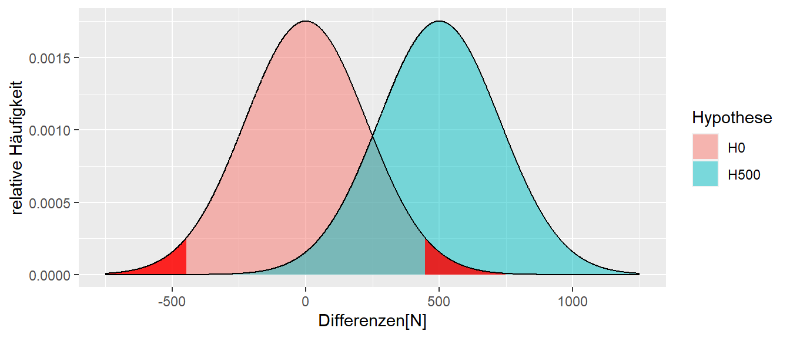
2.12 Wir machen einen \(\beta\)-Fehler!
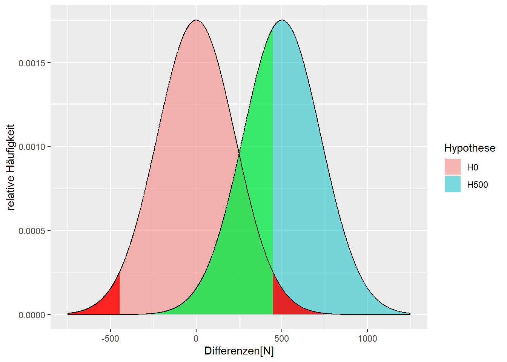
2.13 Snap!(1989) - The Power
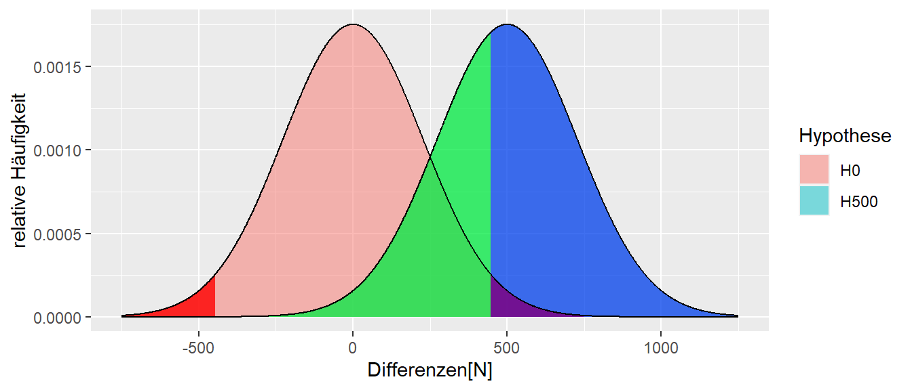
2.14 Terminologie noch mal
- \(\alpha\): Die Wahrscheinlichkeit sich gegen die \(H_0\) zu entscheiden, wenn die \(H_0\) zutrifft. \(\alpha\)-Level wird vor dem Experiment festgelegt um zu kontrollieren welche Fehlerrate toleriert wird.
- \(\beta\): Die Wahrscheinlichkeit sich gegen die \(H_1\) zu entscheiden, wenn die \(H_1\) zutrifft.
- Power := \(1 - \beta\): Die Wahrscheinlichkeit sich für die \(H_1\) zu entscheiden, wenn die \(H_1\) zutrifft. Sollte ebenfalls vor dem Experiment festgelegt werden.
2.15 Wie können wir die Power erhöhen?
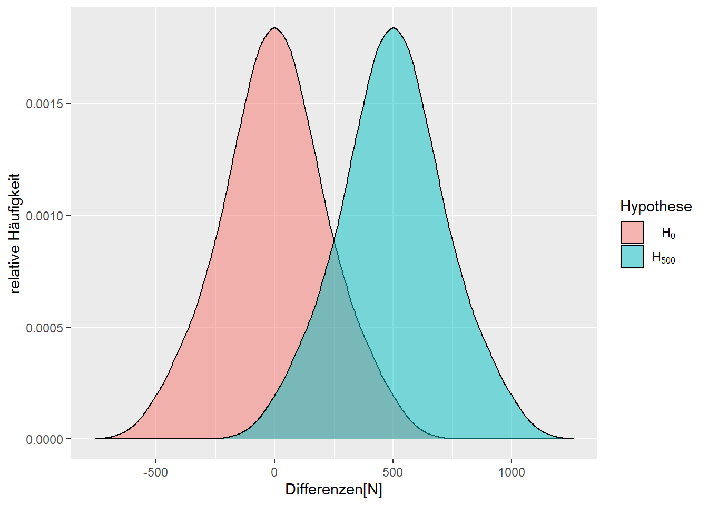
2.16 Stichprobengröße von n = 3 auf n = 9 erhöhen?

2.17 Standardfehler
Die Standardabweichung der Statistik wird als Standardfehler \(s_e\) bezeichnet1. Der Standardfehler ist nicht gleich der Standardabweichung in der Population bzw. der Stichprobe. Es gilt für den Mittelwert:
3 Parameterschätzung
3.1 Problem bei einer dichotomen Betrachtung der Daten
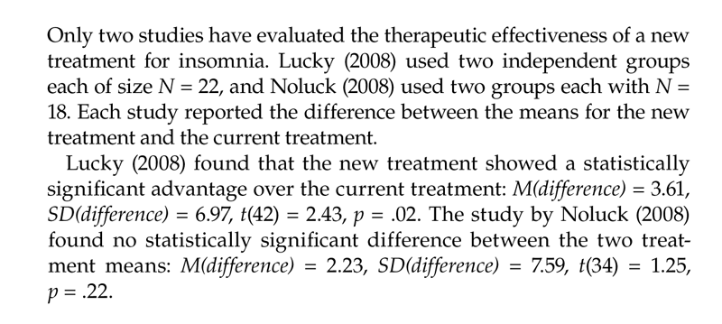
3.2 Wie groß ist der Effekt?
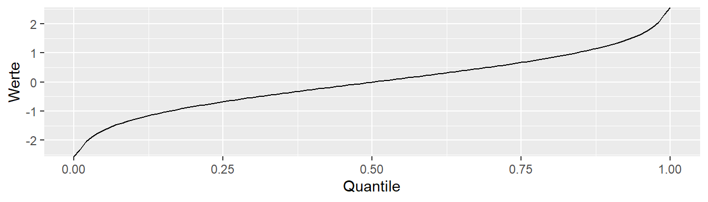
3.3 Schätzung der Populationsparameter
Kleine Welt: Experiment wird einmal mit n = 9 durchgeführt
3.3.1 Beobachtete Stichprobenkennwerte
\[\begin{align*} d = \bar{x}_{treat} - \bar{x}_{con} &= 350 \\ s &= 132 \\ s_e &= 44 \end{align*}\]
Wie präzise ist meine Schätzung und welche anderen Unterschiedswerte sind anhand der beobachteten Daten noch plausibel?
3.4 Welche \(\delta\)s sind plausibel für \(d = 350\)?
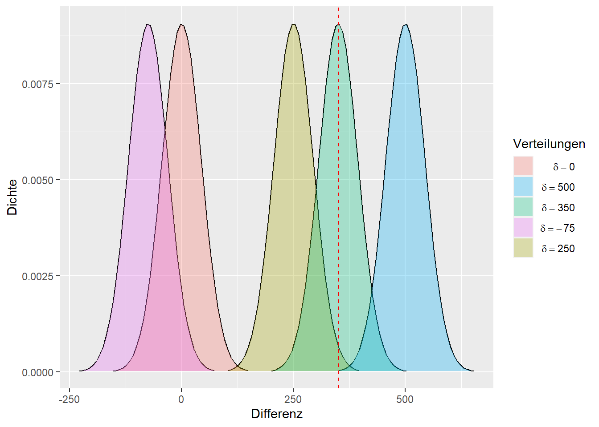
Plausibel unter einem gegebenem \(\alpha\)-Level!
3.5 Alle möglichen \(\delta\)s die plausibel sind

3.6 Was passiert wenn ich das Experiment ganz oft wiederhole?
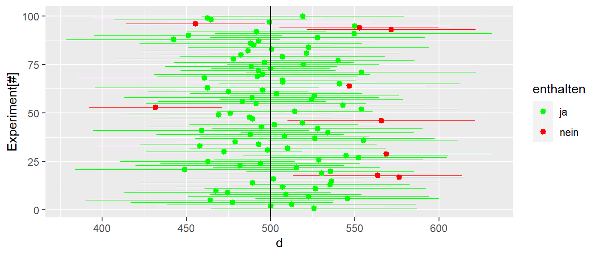
3.7 Konfidenzintervall - Das Kleingedruckte
- Das Konfidenzintervall für ein gegebenes \(\alpha\)-Niveau gibt nicht die Wahrscheinlichkeit an mit der der wahre Parameter in dem Intervall liegt.
- Das Konfidenzintervall gibt alle mit den Daten kompatiblen Populationsparameter an.
- Das \(\alpha\)-Niveau des Konfidenzintervalls gibt an bei welchem Anteil von Wiederholungen davon auszugehen ist, das das Konfidenzintervall den wahren Populationsparameter enthält.
3.8 Konfidenzintervall herleiten nach Spiegelhalter (2019, p.241)
- We use probability theory to tell us, for any particular population parameter, an interval in which we expect the observed statistic to lie with 95% probability.
- Then we observe a particular statistic.
- Finally (and this is the difficult bit) we work out the range of possible population parameters for which our statistic lies in their 95% intervals. This we call a “95% confidence interval”.
- This resulting confidence interval is given the label “95%” since, with repeated application, 95% of such intervals should contain the true value.2
All clear? If it isn’t, then please be reassured that you have joined generations of baffled students.
3.9 Konfidenzintervall berechnen (Vorschau)
\[ \textrm{CI}_{1-\alpha} = \bar{x} \pm z_{\alpha/2} \times s_e \]
3.10 Dualität von Signifikanztests und Konfidenzintervall
Wenn das Konfidenzintervall mit Niveau \(1-\alpha\%\) die \(H_0\) nicht beinhaltet, dann wird auch bei einem Signifikanztest die \(H_0\) bei einer Irrtumswahrscheinlichkeit von \(\alpha\) abgelehnt.
3.11 Verteilungen
3.12 Eigenschaften von Verteilungen - Mittelwert \(\mu\)
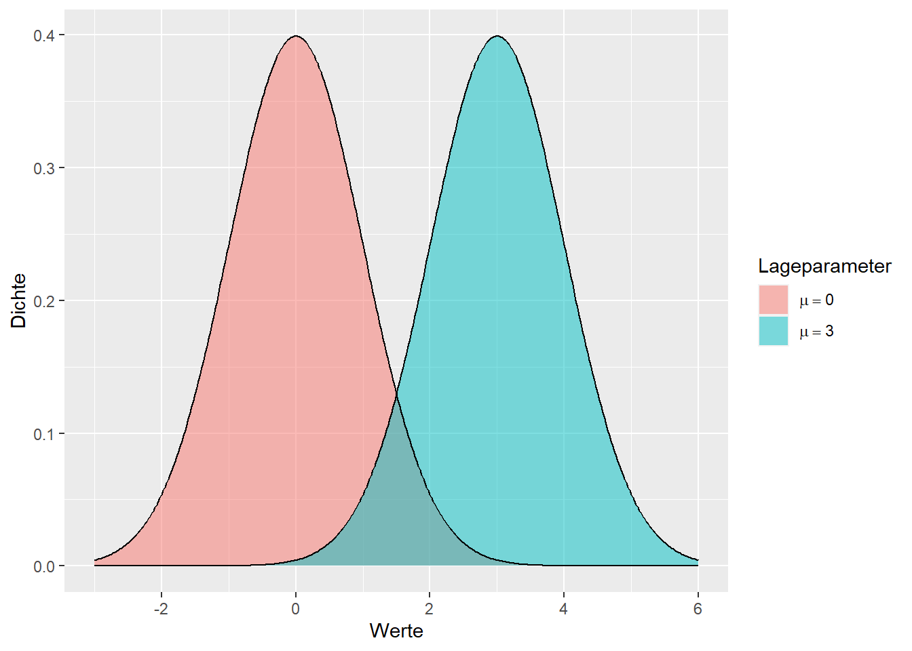
3.13 Eigenschaften von Verteilungen - Varianz \(\sigma^2\)
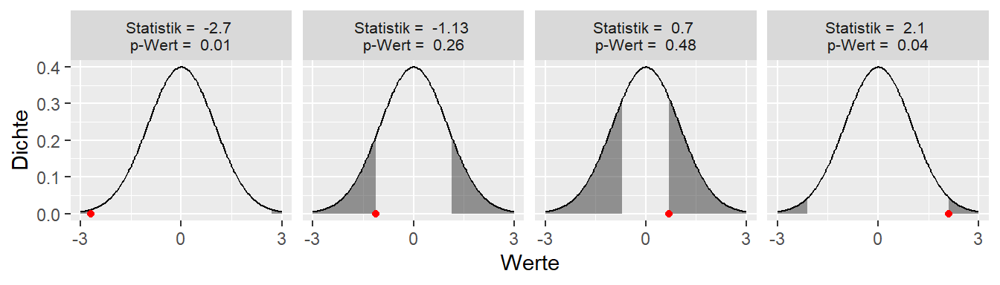
3.14 Formeln
n := Anzahl der Stichprobenelemente, \(x_i\) := Messwerte
3.15 Nebenbei: Warum der Mittelwert Sinn macht